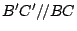
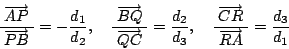
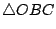
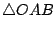
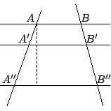

| |
【例題】：
- (1)
- 令 D, E 分別為
 兩邊 兩邊
 , ,  的中點，試証
而且
。 的中點，試証
而且
。
[ 圖 2-13 ]
証明：如 [圖 2-13] 所示，延長 至
使得
，則 E 點平分
和 ，所以
乃是一個平行四邊形。由此可得
與  為平行等長，即
與 也為平行等長，因此
亦是一個平行四邊形。所以
與 為平行等長，即
與 也為平行等長，因此
亦是一個平行四邊形。所以
與  為平行等長，即得所求証。 為平行等長，即得所求証。
- (2)
- 試証
的三條中線共交于一點（稱之為重心），
而該點把每條中線均分成 2:1 的兩段。
[ 圖 2-14 ]
証明：令中線 和 之交點為
O 。取 D',F' 分別為  和 和  之中點，則有（見例題 (1) ）：
之中點，則有（見例題 (1) ）：
所以
與 為平行等長，即
是一個平行四邊形。所以
即得所求証。
- (3)
- 相似三角形定理在整數比時的古希臘証法：
如 [圖 2-15] 所示，B'C' 是分別位于 和
的延長線上之點，滿足
, ,
n 為正整數。試証
,
。
[ 圖 2-15 ]
歸納証明：當 n=1 時結果是顯然的。當 n=2 時乃是例題 (1) 之所証。玆對于  時作歸納証明如下：
以 之長度等分
為 n 段，令其等分點為 時作歸納証明如下：
以 之長度等分
為 n 段，令其等分點為
過 Bn-2 及 Bn-1 作兩條平行于 BC 的直線
其中 Cn-2 及 Cn-1 為 AC' 上兩點；再過
Cn-2 及 C' 作兩條平行于 AB 的直線
其中 D 及 F 為
Bn-1Cn-1 上兩點，如 [圖 2-15] 所示。
由所作易見
和
都是平行四邊形，所以
與
為平行等長，
與
為平行等長；
由所作亦有
=
，所以
與
也為平行等長，即
亦是平行四邊形。因為平行四邊形的兩條對角線互相平分，所以
，和
現用歸納假設可得
所以
亦即
和
定理証畢。
- (4)
- 外接圓作圖：對于一個給定的
，唯一存在一個過其三頂點的圓，稱之為
的外接圓（如 [圖 2-16] 所示）。其作圖法如下：用[基本作圖 1.3]，分別作 和 的垂直平分線。則兩線的交點 O 乃是具有和三頂點等距，即
的唯一之點，所以它就是所求作的外心（外接圓圓心）。
[註]： 和 的垂直平分線只有在
A, B, C 三點共線時才不相交。
[ 圖 2-16 ]
- (5)
- 試証 Menelous 定理：設直線
 與
三邊所在之直線 AB, BC 和 CA
分別相交于 P, Q, R（相異）三點，則下述有向長度比乘積條件式恆成立：
與
三邊所在之直線 AB, BC 和 CA
分別相交于 P, Q, R（相異）三點，則下述有向長度比乘積條件式恆成立：
[Menelous 逆定理亦成立。証明留作習題。]
[ 圖 2-17 ]
証明：令 d1, d2, d3 分別是頂點 A, B, C
到直線 之垂直距離，則由相似三角形定理可得

所以
- (6)
- 試証 Ceva 定理：設 O 為
內部一點，P', Q, R 分別為 AB 與 CO, BC 與 AO, CA 與 BO
之交點，則下述有向長度比乘積條件式恆成立：
[Ceva 逆定理亦成立。証明留作習題。]
[ 圖 2-18 ]
証明：令
,
,
 的面積分別為 , , 。因為
與
同高，所以其面積之比等于其底邊邊長之比，亦即
同理
所以
類似地可得
將三式相乘即為所求証。
【定義】：在直線上之四點列 P, A, P', B 稱之為調和點列，記以
(PP';AB)=-1，若滿足下述有向長度比的條件式：
亦即 P, P' 兩點以同等比例分割線段 （一在外、一在內）。
- (7)
- 調和點列作圖法：對給定已共線三點
P, A, B，求作 P' 點使得 P, A, P', B 成調和點列。
[ 圖 2-19 ]
[作法] 用已給線段 為一邊，任選線外一點 C 構作三角形
。過 P 點作任意的直線 ，使得
與 , 分別交于
Q, R 兩點。連結 AQ, BR，設兩者相交于 O 點，則 CO 與
就會交于所求作之 P' 點。
証明：直接運用 Menelous 定理和 Ceva 定理！
兩式相除即得所需的有向長度比例式。
- (8)
- Steiner 點：設
的三內角皆小于
（即小于
），則
有一個唯一的極小值，其解點 P0 乃是使得
之點。
[ 圖 2-20 ]
如 [圖 2-20] 所示，作 B* 使得
為等邊三角形。設 P 是平面上任給一點，令
為
繞 A 點旋轉
之所得者，則有
為等邊三角形，而且
由此可見，上述總長在 P, P' 皆位于
之上為極小。類似地定義 A* 和 C* 點，則
P0 應該就是
,
,
的共交點，而所求証者則顯而易見了。
【習題】：
- (1)
- 以矩形面積公式為基礎，試証：平行四邊形面積 = 底乘高。
- (2)
- 試証三角形面積公式為
。
- (3)
- 試証平行線的截割保持線段之比；即如 [圖 2-21] 所示，求証：

[ 圖 2-21 ]
- (4)
- 如 [圖 2-22] 所示，AD 乃是 的分角線。試証
[ 圖 2-22 ]
- (5)
- 試將一個給定線段 等分為 n 段，n 為某一正整數。
- (6)
- 試証明相似三角形定理在分數比的情形。
- (7)
- 試証 Menelous 逆定理：設（相異）三點 P, Q, R
分別在
三邊 AB, BC, CA
之上並滿足下述有向長度比的條件式，則 P, Q, R 三點共線。
- (8)
- 試証 Ceva 逆定理：設 P', Q, R 分別為
的三邊 , ,
上的三點並滿足下述有向長度比的條件式，則
CP', AQ, BR 三線共點。
- (9)
- 試証圓心角為圓周角之兩倍：
。
[ 圖 2-23 ]
- (10)
- 在 [圖 2-24] 中，PQR 為一直線，PT 與圓相切于 T
點。試証：
。
[ 圖 2-24 ]
- (11)
- 設 P, Q, R, S 為圓上四點，而 與
則相交于圓內（或圓外）
T 點。試証：
。
[ 圖 2-25 ]
- (12)
- 試証 Miquel 定理：在
的三邊
, ,
上分別取三點 P, Q, R，過 P, B, Q 及 P, R, A 分別作圓，令兩圓交點為 S（與 P），則 S, Q, C, R 四點共圓。
[ 圖 2-26 ]
- (13)
- 若平面中的一個變換 τ 滿足條件
則稱 τ 為平面上一個平移 (translation) 。試証平移之組合仍是平移，即驗証：
[ 圖 2-27 ]
- (18)
- 試証廣義勾股定理：設 與
為平行等長，則：
[ 圖 2-28 ]
|
|
|